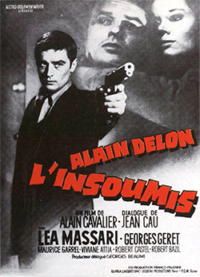

Alain Cavalier
1964
115 minutes
TITLE: L'Insoumis TEXT PLACEHOLDER 174
This is a French film noir directed by Alain Cavalier and starring famous hunk Alain Delon, who plays a deserter from the Algerian War. He ends up getting mixed up with the OAS, basically a group of right-wing extremists who were trying to keep the French ruling Algeria even after the French government had stopped trying to rule Algeria. The film starts with the OAS creeps tasking him with kidnapping a female lawyer who is working on a case with Algerian clients, which puts her in the crosshairs of the OAS. He's already disillusioned by their politics since he's not a total scumbag, so he helps her escape and hijinks ensue. It's a bit of an awkward film since he starts out working for an organization that is a bunch of uncomfortably bad guys, but throughout the film his morals show through.
Your first exposure to anything OAS related was reading Day of the Jackal when you were in middle school and later seeing the film. The politics of the book confused you back in the day, and you struggled to understand why French right wing terrorists who weren't specifically Nazis might want to assassinate Charles de Gaulle, whose name you only knew in connection with the French Resistance. The waters were muddied for you considerably since the book was using real people in it and the Jackal was already credited with the assassinations of two other real-world politicians whose names you had at least heard.
These were the days before Wikipedia, so while it was possible to go to the encyclopedia and read up on entries on Patrice Lumumba and Rafael Trujillo, there wasn't anywhere similar to read about the plot of the book or the movie to find that the events in it were entirely fictional. It's hard to appreciate now what weird days those were. We've grown to take sources even with the general common-knowledge reliability of Wikipedia for granted, and now we suffer from a glut of information instead of a lack thereof. It's much easier now to read an "article" by some shithead who has no idea what they're talking about and take it for gospel because it sounds true and they sound so confident, which is what worries you a bit about the current trends in AI. Anything not explicitly debunked is potentially true, as far as the LLM is concerned.
Just to prove your point, you quickly cook up a question based on Game of Thrones. You ask the AI overview, "Who is Jamie Lannister's great-grandfather?" The AI overview in google gleefully informs you that "Jamie Lannister's great-grandfather was Tytos Lannister, who was the father of Tywin Lannister and the grandfather of Jaime, Cersei, and Tyrion." This of course is self-contradictory, indicating that Tytos is both Jamie's grandfather and great-grandfather. There is no source quoted for this, but a glance at the Wiki indicates the actual answer is Gerold Lannister. To be fair, "Dive deeper in AI mode" provides the correct answer, but again with zero sources. It's lucky that the initial answer literally contradicts itself, or a naive user would have no reason to do further searches to correct this information. And this is an example with nothing more tricky than direct lineage in a family tree to go on, which is not a complicated structure until you get into the generations where all the incest starts...
Time to choose something different: